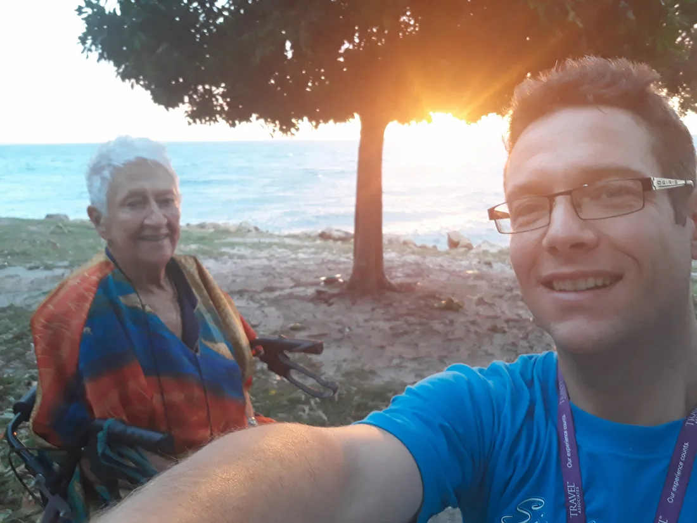

About Luke
Why Strange but True?
A local community connection to practical help, creative work and a wider world of research, technology and public ideas.
A local thread, not a straight line.
My connection to North Stradbroke Island / Minjerribah runs through family, time and regular return to country like a boomerang to Amity/Pulan. My grandmother, Constance Millar, was active in island community life and volunteering for around 50 years before she passed away in late February 2025.
I have regularly visited and also resided here on and off for years between travel, work, study, renovations, family responsibilities and periods away. After returning home from India in 2024, the island became the clearest place to gather the useful parts of my life into one practical local service.

The short version
Strange but True connects people with practical local support and creative work. It also provides a way into my broader research, public submissions and projects, which reach from Minjerribah and Redlands to Queensland, Australia and the world.
Constance
There ain't no pleasing you.
My grandmother Constance liked to sing There Ain't No Pleasing You. At her 90th birthday, that song became more than a family laugh. It became a little reminder about stubborn love, humour, and not giving up on the work your life keeps pointing toward.
Imagine how your own life might have bent differently if you grew up with a grandmother like Constance, turning There Ain't No Pleasing You into something generous: don't settle for a life that betrays the thing you are here to give. Stay constant, keep returning to your world-passion, make something useful, and remember that the selfless part matters.
There Ain't No Pleasing You
Watch on YouTubeImagine this
What might your life become if someone kept reminding you, with love and a bit of cheek, not to give up on the thing you came here to do?
Useful help without the pressure.
A lot of useful technology gets wrapped in stress, jargon or pressure. Strange but True is built around a simpler invitation: bring the confusing thing, the local idea, the half-formed project or the creative spark, and I'll help make it easier to work with.
I have had computers around me for almost my whole life, from Pong, Atari and arcade games, through the gradual arrival of the internet, websites, digital music, massively multiplayer online games, AI tools and the current wave of strange new systems. My love of science fiction probably helped.
Years of learning in adversity, trying different work, learning from other perspectives and following the useful thread feed into practical local support as well as research, civic projects and systems that address larger questions.

Not a shopfront
Based in Amity. The shed is for admin and equipment storage, not public visits. You can contact me or book mobile help by arrangement across North Stradbroke Island / Minjerribah. I have the equipment for a market stall, which I plan to host in future.
Strange but True
Strange enough to intrigue, true enough to trust.
I usually cut my own path. That has taken me through many jobs, travel, music festivals, websites, writing, AI experiments, creative projects and unfinished formal study where the pace or direction did not fit. The pattern underneath is curiosity, independence and a long-running interest in how technology, creativity and community systems can help people instead of overwhelming them.
My wider work includes Joyful Responsible Abundance and a fair go in the age of superintelligence: exploring how powerful tools and community systems can serve ordinary people, local communities and the living world. It includes public submissions and proposals as well as creative and technical projects.
One small line from an older poem still sits underneath the work: "Choose love, choose infinity and seek deeper meaning." It belongs here as a quiet signpost, not as homework for anyone who just needs practical help.
Explore the work
Start with a practical local need, explore projects by geography, or discuss AI advisory for public leadership.
Explore projects · Public leadership AI advisory
For a household charge you want to understand, the Australian Household Bill Check helps you trace the fine print and prepare a written request for an explanation.